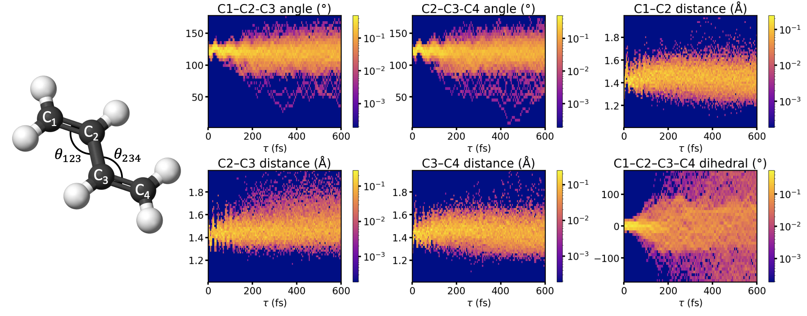

Butadiene — Trajectory Decomposition into Isomers

- Key internal coordinates (bond angles, bond lengths, and the C1–C2–C3–C4 dihedral) tracked across the full trajectory ensemble
- The distribution of these coordinates decomposes the trajectories into the distinct cis and trans isomer populations as the molecule evolves